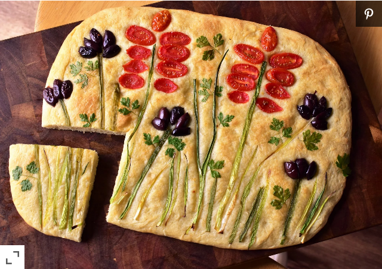

Focaccia Bread

Fantastic Focaccia Bread
If you've never made bread from scratch
before, focaccia is a great place to
start. This simple, straightforward
focaccia recipe comes to life in a 9x13
casserole dish and doesn't require an
elaborate kneading process, making it an
attainable and delicious project for
beginner bakers.
Ingredients
- ½ teaspoon honey
- 1 (.25 ounce) package active dry yeast
- ⅔ cup warm water (110 degrees F/45 degrees C)
- 2 cups all-purpose flour
- ½ teaspoon salt
- 4 tablespoons olive oil, divided
Steps
- In a large bowl, dissolve honey and yeast in warm water. Let stand until creamy, about 10 minutes.
- Add 1 cup flour, salt, and 3 tablespoons olive oil to the yeast mixture. Stir until combined and then work in the last cup of flour. Knead the dough until smooth, elastic, and soft, about 7 minutes. Add only enough flour to keep the dough from being sticky. Lightly oil a large bowl, place the dough in the bowl and turn to coat with oil. Cover with a damp cloth and let rise in a warm place until doubled in volume, about 1 hour.
- Deflate the dough and turn it out onto a lightly floured surface. Roll out the dough into a rectangle, about 1/2 inch thick. Place in greased 9x13 inch pan or baking sheet. Cover and let rise until doubled in volume, about 40 minutes. Meanwhile, preheat oven to 400 degrees F (200 degrees C).
- Poke dimples in the bread and drizzle 1 tablespoon of the olive oil on top. Bake at 400 degrees for 15 minutes.
Home